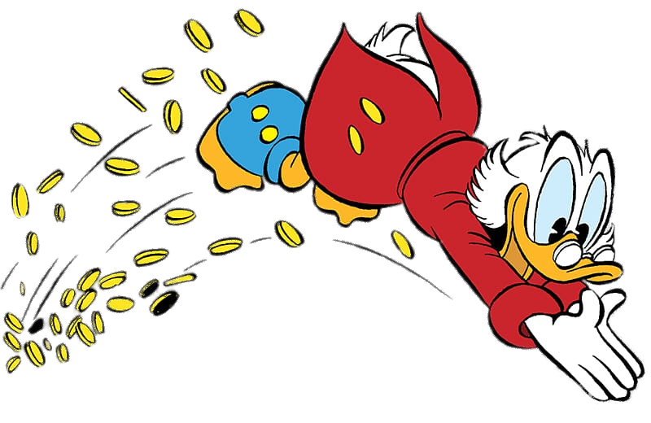
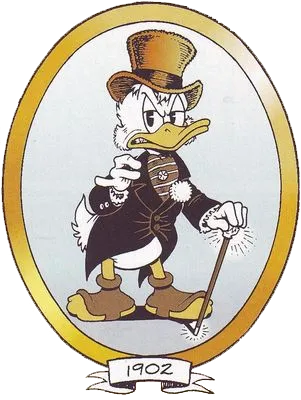
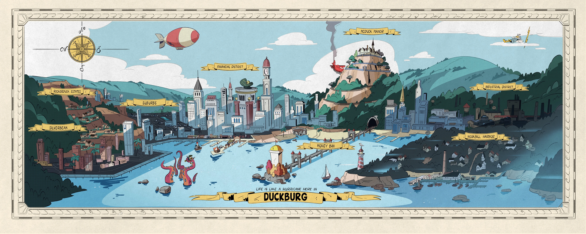
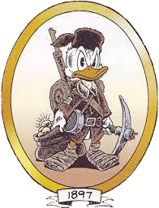
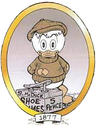

Scrooge
Mcduck
and his coins no. 01
-
Legacy - Early 21st Century
"As I entered the early 21st century, my legacy as one of the richest ducks in the world was firmly established. My financial empire had expanded into various industries, and my estimated net worth had reached astronomical levels. While the exact figures may be a well-kept secret, it's safe to say that my fortune was measured in the hundreds of billions, if not trillions, of dollars.”
-
Reunions and Family - 1980s
"In the 1980s, I reconnected with my family, including my nephew Donald and his nephews, Huey, Dewey, and Louie. It was a time of reunions and adventures, and my wealth continued to grow. By the 1980s, my estimated net worth had soared into the tens of billions, making me one of the wealthiest individuals on Earth."
-
Post-Retirement Adventures - 1950s-1960s
"After my retirement, I couldn't resist the call of adventure. I embarked on various journeys, including treasure hunts and business ventures. During the 1950s and 1960s, I continued to amass wealth, and my fortune grew significantly. My estimated net worth during this period was well into the billions.”
-
Retirement - 1942-1947
"In 1942, I felt tired and depressed and decided to retire. My fortune was considerable at that time, but the exact figures have always been a bit unclear. In 1947 it was the first that me and my adventures where relevant enough to be shown to the world”

-
World Travels - 1909-1930
"I circumnavigated the globe, making all sorts of business deals and adventures. After my travels, I returned to Duckburg. It was also during this time that I first met my ten-year-old nephew, Donald Duck, along with his twin sister, Della Thelma Duck. On the same day, I lost contact with my family and became the richest duck in the world. My fortune at that time was substantial, estimated in the billions.”
-
Duckburg - 1902
"The family and I moved to Duckburg, Calisota, USA, where I met the Duck family and the founding members of The Junior Woodchucks. It was there that I had my first encounter with the Beagle Boys since my riverboat days. Oh, and of course, I also had a conversation with President Theodore Roosevelt.”
- 
- 
-
Building an Empire - 1899-1902
"I bought a bank and began building my small financial empire. By 1902, I had already become a billionaire. It was an exciting time for my financial adventure.”
 -
The Path to Riches - 1898
"I started amassing my fortune by being 'smarter than the smarties and tougher than the toughies.' I became what they call an 'adventure capitalist,' seeking lost treasures to add to my wealth. During this time, I became a millionaire, with an estimate of several million.”
-
Early Adventures - 1877-1880
"My youth brought me into conflict with the Whiskervilles, a family I've always had something to do with. It was during these years that I earned my first coin, that famous 'Number One Dime.' I traveled to the United States on a cattle boat to make my fortune. My account balance at that time was zero, only my lucky number one dime in my pocket.”
-
The Beginning - 1867
"Ah, 1867, the year of my birth in Glasgow, Scotland. My parents, Fergus McDuck and Downy O'Drake, welcomed me into the world. I was blessed with two younger sisters, Matilda McDuck and Hortense McDuck. At that time, of course, I had not a dime to my name.”
